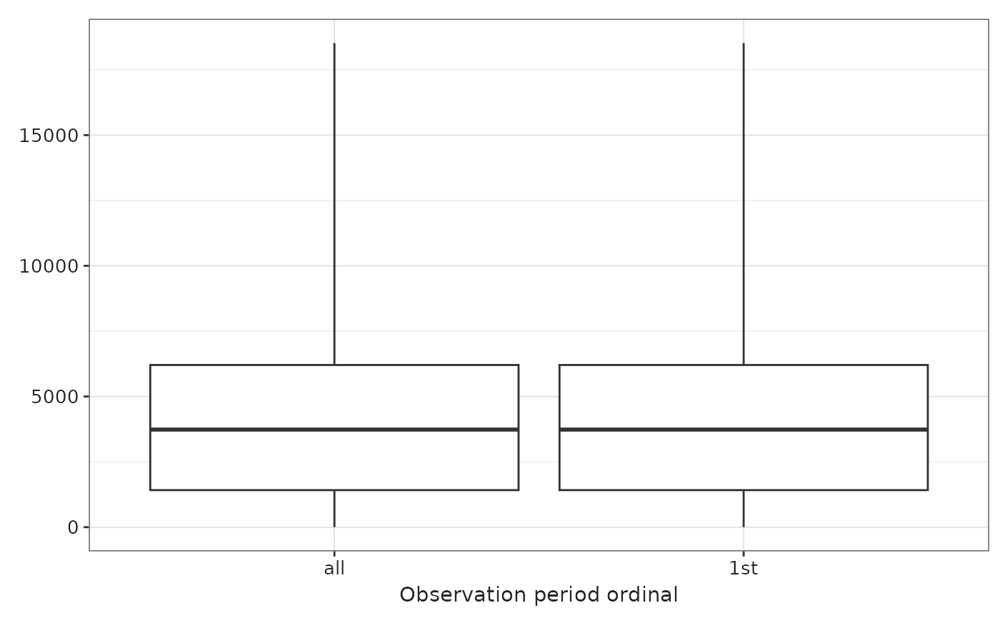

Create a plot from the output of summariseObservationPeriod().
Source:R/plotObservationPeriod.R
plotObservationPeriod.RdCreate a plot from the output of summariseObservationPeriod().
Usage
plotObservationPeriod(
result,
variableName = "Number subjects",
plotType = "barplot",
facet = NULL,
colour = NULL
)Arguments
- result
A summarised_result object.
- variableName
The variable to plot it can be: "number subjects", "records per person", "duration" or "days to next observation period".
- plotType
The plot type, it can be: "barplot", "boxplot" or "densityplot".
- facet
Columns to colour by. See possible columns to colour by with:
visOmopResults::tidyColumns().- colour
Columns to colour by. See possible columns to colour by with:
visOmopResults::tidyColumns().
Examples
# \donttest{
cdm <- mockOmopSketch(numberIndividuals = 100)
result <- summariseObservationPeriod(cdm$observation_period)
result |>
plotObservationPeriod(
variableName = "Duration in days",
plotType = "boxplot"
)

PatientProfiles::mockDisconnect(cdm)
# }